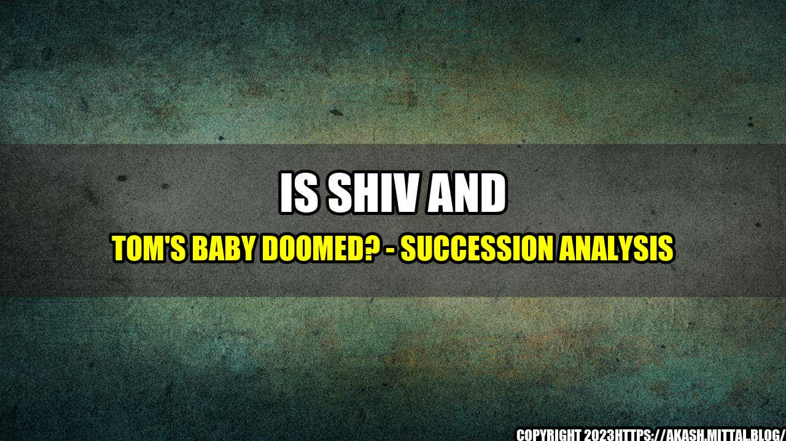

The Succession of Shiv and Tom's Baby: A Doomed Dynasty?
Everyone who has watched the hit TV series Succession knows that the Roy family is not your typical family. With their immense wealth, power struggles, and ruthless business tactics, it's no wonder that viewers tune in week after week to watch their drama unfold.
One of the most intriguing storylines in the show has been the impending birth of Shiv and Tom's baby. As the only Roy grandchild, there is a lot of pressure on this child to continue the family legacy. But with Shiv and Tom's dysfunctional relationship and the Roy family's notorious history, is it possible that this baby is doomed to fail?
The Family Legacy
One of the main themes in Succession is the idea of legacy. The Roy family is obsessed with their reputation, their power, and their wealth. They will stop at nothing to maintain their position in the world and to ensure that their legacy continues. But at what cost?
"I think what happens when you start living within capitalism is you start to mistake getting richer for being a success." - Kendall Roy
The Roy family is a cautionary tale about the dangers of wealth and power. Their obsession with success has caused them to become disconnected from each other and from reality. The legacy they are so desperate to protect may ultimately be their downfall.
The Dysfunction of Shiv and Tom's Relationship
Shiv and Tom's relationship is a prime example of the dysfunctional dynamics within the Roy family. Their marriage is based on lies, manipulation, and a desire for power. They are constantly using each other to further their own agendas and are never truly honest with each other.
It's hard to imagine that a child born into this kind of relationship would have a healthy upbringing. The constant power struggles and manipulation within the family would undoubtedly have an impact on the child's development.
The Notorious Roy Family History
Finally, we must consider the notorious history of the Roy family. Succession is filled with examples of their ruthless business tactics, unethical behavior, and casual cruelty. It's a wonder that any member of this family can lead a healthy, productive life.
If this baby is to have any chance at all, it will need to escape the toxic environment of the Roy family. But with their immense wealth and power, escaping may prove to be impossible.
Conclusion:
- The obsession with legacy is a major theme in Succession, and it ultimately leads to the downfall of the Roy family.
- The dysfunction of Shiv and Tom's relationship is indicative of the tumultuous dynamics within the family, and it's difficult to imagine that their child would have a healthy upbringing.
- The notorious history of the Roy family makes it unlikely that any member of this family can lead a healthy, productive life.
Curated by Team Akash.Mittal.Blog
Share on Twitter Share on LinkedIn